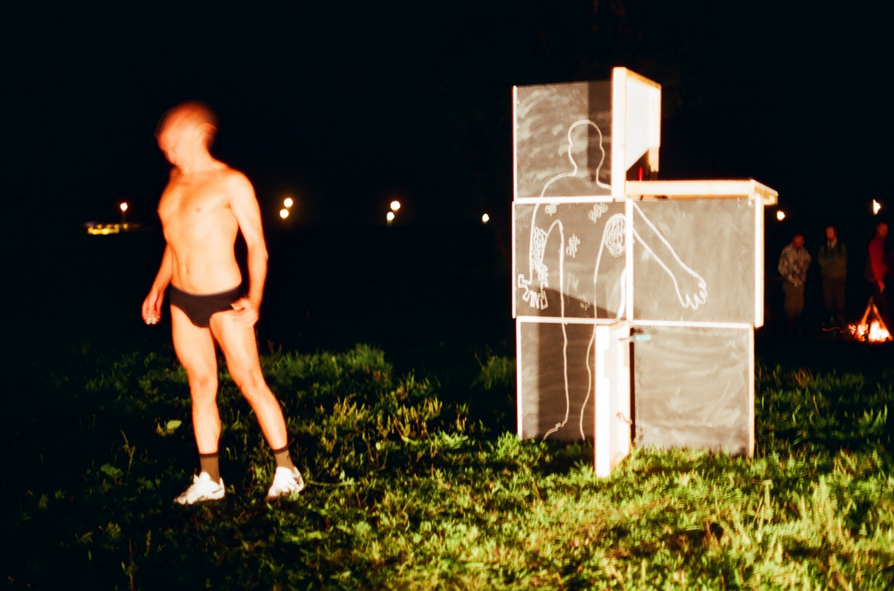

Umjetnički radovi
Od 2001. godine surađujem s izvedbenim kolektivom BADco.. Naš rad spaja plesnu umjetnost, koreografiju kao proširenu praksu i eksperimentalnu dramaturgiju. Karakteristika naših radova je stalna destabilizacija teatarskog čina kao čina izvedbe, čina gledanja i čina komunikacije. Oni su orijentirani prema kreiranju problema, a ne jednoznačnom razumijevanju, uživljavanju i identifikaciji. Tijekom godina producirali smo preko 20 predstava, niz instalacija, filmova i vide, istraživačkih projekata i digitalnih alatki. Ovo je izbor radova u čijem sam nastajanju sudjelovao:
Ispravci ritma, 2017.

Spore, 2016.
Institucije treba gradit, 2016
Dodatak histerije, ubrzanja... - melodrama, 2013.

TVolution will not be Televised, interaktivna instalacija, 2013.
Prirodu treba graditi,performative event, 2013.

Ima li života na sceni? - vježbe iz oblikovanja Zemlje, 2013.
Odgovornost za viđeno, interactive installation, 2011.


The League of Time, 2009.
Whatever Dance Toolbox, softer za razvoj koreografije, programer: Daniel Turing, 2008.
1 poor and one 0, 2008.

Deleted Messages, 2004.

Ribcage, 2003.

Diderot’s Nephew, or Blood is Thicker than Water, 2001.
https://vimeo.com/132632159